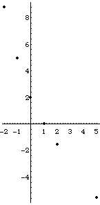

| Pictured here are some points on the tau(q) graph for these values:
|
|  |
| The left side of the graph suggests that limq ->-infinitytau(q) = +infinity. |
| The right side of the graph suggests that limq ->+infinitytau(q) = -infinity. |
Return to tau(q) exercises.